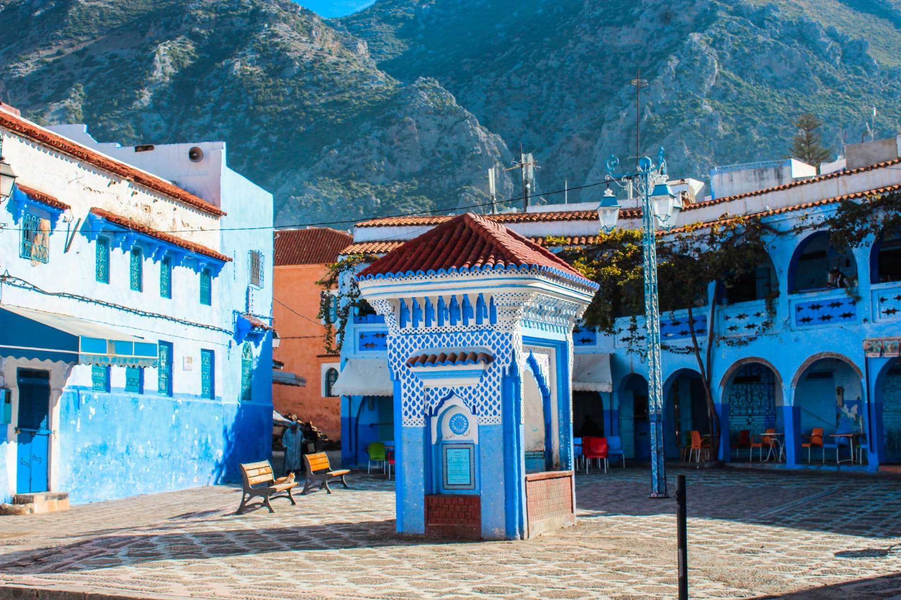
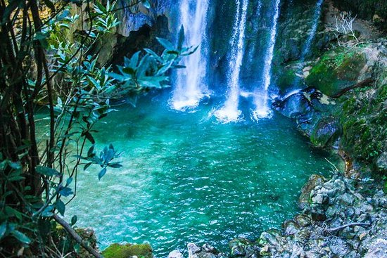
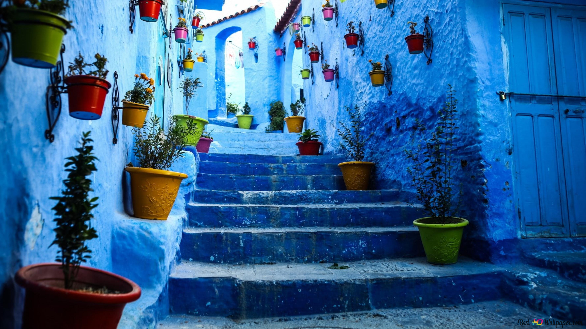

À propos de Chefchaouen
Chefchaouen, surnommée la « Ville bleue », est une ville du Maroc, située au pied des monts Kelaa et Meggou, entre Tétouan et Ouazzane. Fondée en 1471, la ville est connue pour ses façades teintes de bleu et de blanc.
Activités à faire
- Explorer la Médina Bleue célèbre pour ses ruelles étroites et ses bâtiments peints en bleu.
- Visiter la Kasbah de Chefchaouen, située au cœur de la médina.
- Découvrir les Cascades d'Akchour.
- Randonnée dans le Parc National de Talassemtane.
- Goûter aux spécialités culinaires de la région.
Aperçu



Vidéo de présentation
Informations pratiques
Adresse : Nord-Ouest du Maroc
Prix hotel: à partir de 23€ la nuit
Comment s’y rendre ?
- Avion : Prenez un vol jusqu'à l'aéroport de Casablanca.
- En voiture ou en Bus : En partant depuis l'aéroport
Conseil VP Tours : La voiture est le meilleur moyen plus rapide plus simple et permet de mieux observer les paysages.